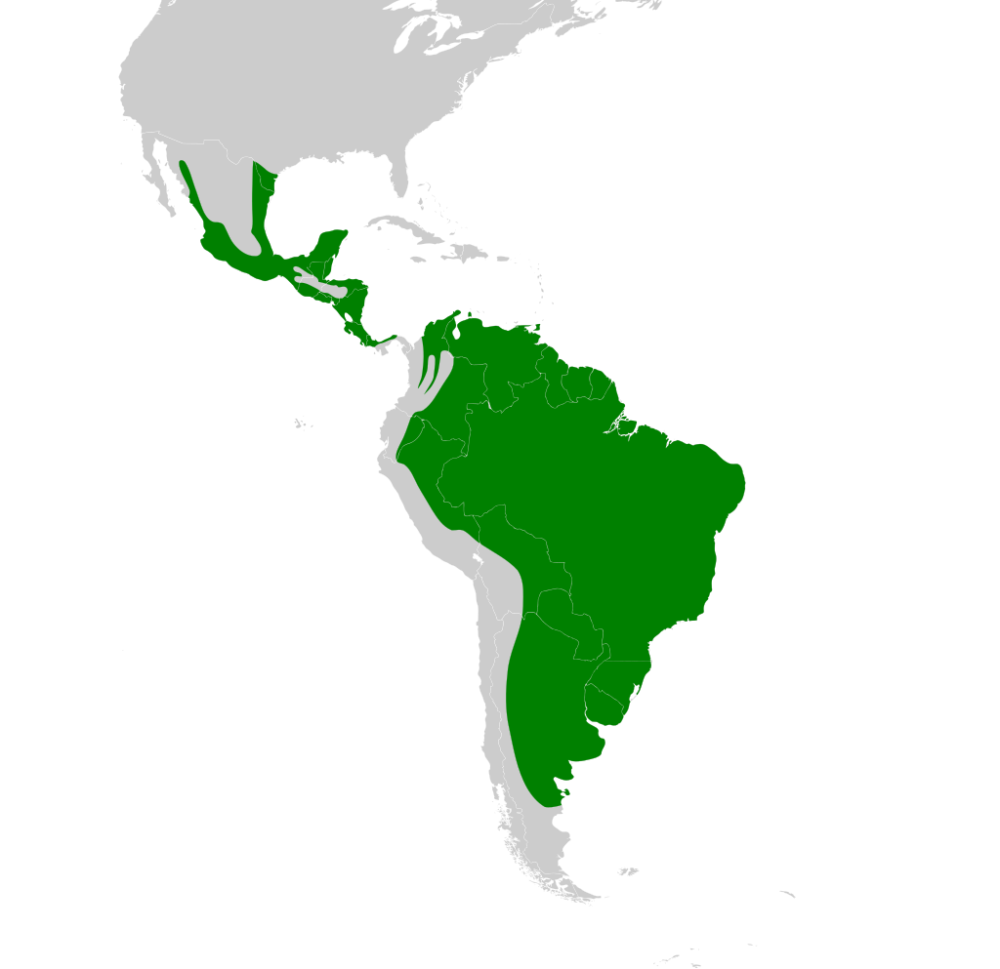

Bem te vi
.jpg)
Nome científico:(Pitangus sulphuratus Swainson, 1827)
Nome comum:Bem te vi.
Classificação biológica:
Domínio: Eukaryota.
Reino: Animalia.
Filo: Chordata.
Classe: Aves.
Ordem: Passeriformes.
Família: Tyrannidae.
Gênero: Pitangus.
Espécie: Pitangus sulphuratus.
Nutrição: Onívoro.
Hábitos alimentares: Alimenta-se de insetos, frutas, pequenos vertebrados e até peixes. É um animal oportunista, adaptando sua dieta ao que está disponível no ambiente.
Morfologia do corpo: Mede entre 20 e 25 cm de comprimento e pesa entre 50 e 60 gramas. Possui plumagem amarela no ventre, peito e cabeça, com dorso marrom e uma listra branca acima dos olhos.
Comportamento: É uma ave territorial e vocalmente ativa, conhecida por seu canto característico ("bem-te-vi"). Vive solitário ou em pares e é comum em áreas urbanas e rurais.
Principais Presas: Insetos, frutas, pequenos vertebrados e peixes.
Principais Predadores: Aves de rapina, serpentes e pequenos mamíferos carnívoros.
Locais habitados
Distribuição: Presente em todos os biomas brasileiros.
Habitat: Habita florestas, áreas abertas, zonas urbanas e margens de rios. Adapta-se facilmente a ambientes alterados pelo homem.
Reprodução: Constrói ninhos em árvores, postes ou estruturas urbanas, utilizando materiais como gravetos, folhas e penas. A fêmea põe de 2 a 4 ovos, que são incubados por cerca de 18 dias. Os filhotes são alimentados por ambos os pais até aproximadamente 20 dias após a eclosão.